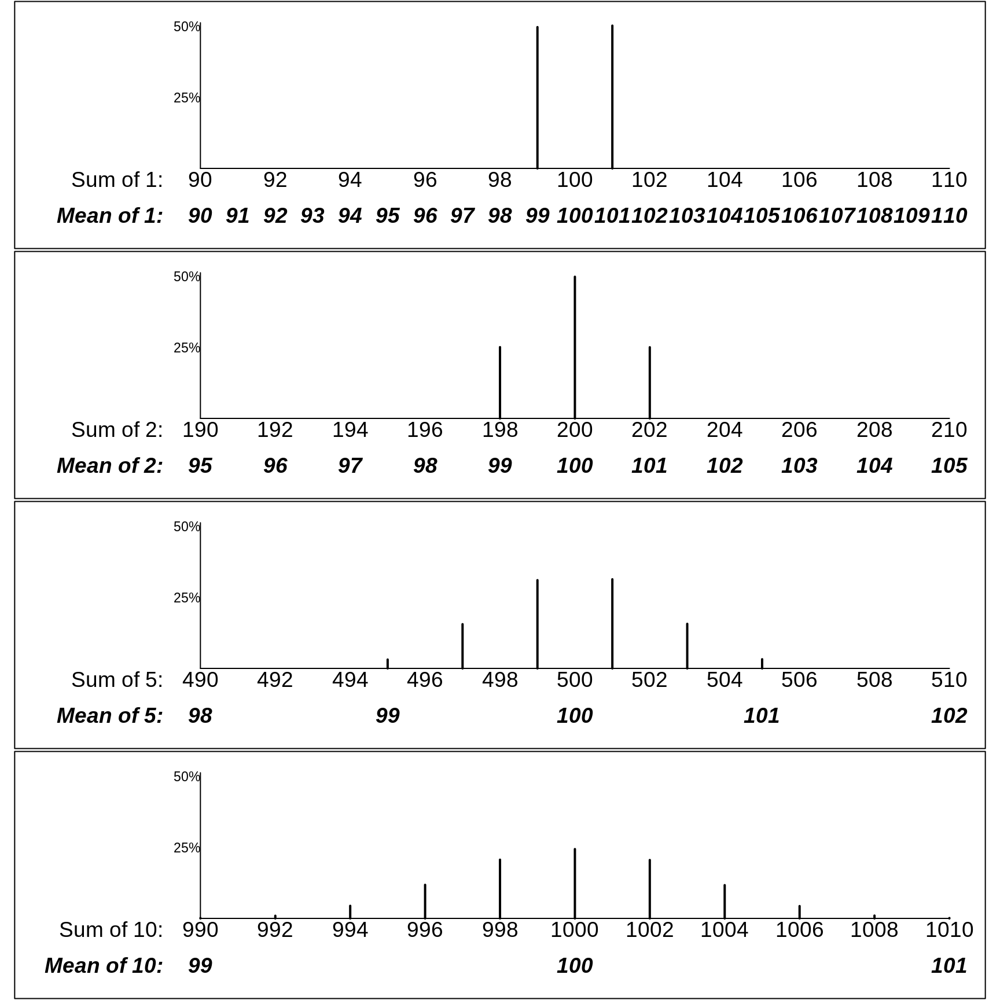
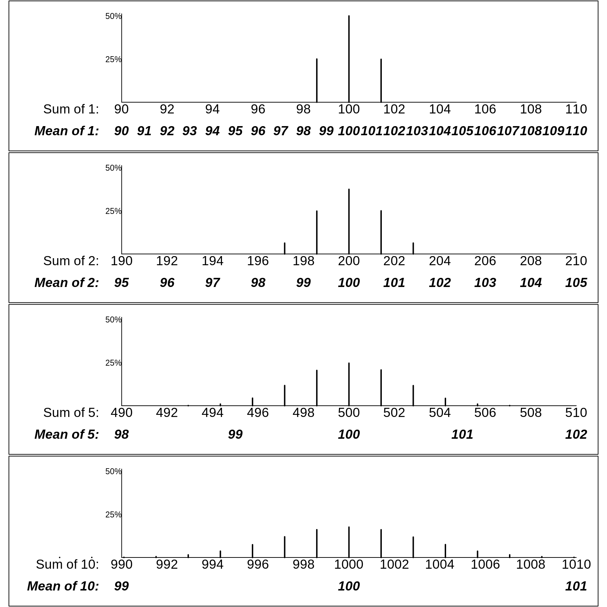

Chapter 16 Computing: Session No. 2
16.1 Objectives
The ‘computing’ objectives are to learn how to use R to
simulate random variation, and random variables
- visualize the consequences of aggregating independent random variables
discover the statistical laws that govern the variability of combinations of independent observations
The ‘statistical’ objectives of this exercise are to
be introduced to parameters that measure the spread of the distribution of a random variable, whether it be an error distribution, or a biological one.
learn (empirically, and heuristically) the statistical laws that govern how the spread of a linear combination (e.g, the sum, or the mean) of several (generically, \(n\)) independent random variates is related to the spread of the individual random variables.
The ultimate objective is to be able to use these laws to help investigators, such as Henry Cavendish [see below], to (probabilistically) quantify ‘how far off’ their parameter estimates might be.
Gelman and Hills distinguish the more common sampling model, where ‘we are interested in learning some characteristics of a population’ from a ‘measurement error’ model. We start with the simpler context.
16.2 Scientific background
In Isaac Newton’s Principia, Book III, The System of the World, Proposition 10, Theorem 10 we read: ‘If the earth were not denser than the seas, it would emerge from those seas and, according to the degree of its lightness, a part of the earth would stand out from the water, while all those seas flowed to the opposite side. By the same argument the spots on the sun are lighter than the solar shining matter on top of which they float. And in whatever way the planets were formed, at the time when the mass was fluid, all heavier matter made for the centre, away from the water. Accordingly, since the ordinary matter of our earth at its surface is about twice as heavy as water, and a little lower down, in mines, is found to be about three or four or even five times heavier than water, it is likely that the total amount of matter in the earth is about five to six times greater than it would be if the whole earth consisted of water, especially since it has already been shown above that the earth is about four times denser than Jupiter.’
The fact that the average of Newton’s ‘five or six’ is very close to today’s value of the mean relative density of the Earth shows just how prescient he was. The mean density of the Earth was an extremely important quantity in early Renaissance science as it provided a strong clue as to planetary composition.
Some of words above are taken from this article by astronomer David Hughes. Table 2 in the article shows ‘Values suggested for the mean density of the Earth, as a function of the date of publication’ starts with Newton’s 1687 guesstimate, and ends, (23 estimates later) with Heyl and Chrzanowski’s 1942 value. Five of the 24 estimates are accompanied by a \(\pm\) value, but what these \(\pm\) values signify is left unexplained. One of the 24 is Cavendish’s 1798 estimate, which he obtained by taking the mean of \(n =\) 29 density measurements derived using a torsion balance on 17 days in the months of August and September, and the following April and May. Cavendish’s ‘point estimate’ was 5.48. Since his’extreme results do not differ from the mean by more than 0.38,or \(\frac{1}{14}\) of the whole’ […] Therefore, it seems very unlikely that the density of the earth should differ from the 5.48 by so much as \(\frac{1}{14}\) of the whole.’
Here we have an effort, by no less than Isaac Newton, to give a numerical interval within which the true parameter value is likely to lie. To Cavendish, it seems very unlikely that the density of the earth should differ from the 5.48 by so much as \(\frac{1}{14}\) of the whole.’ Our objective is to learn the statistical laws and tools, unknown in their time, to statistically quantify how far off the mark our modern statistical estimators are (un)likely to be – and to tighten Cavendish’s lower and upper bounds!
16.3 Random Variation
16.3.1 Measurement errors
The ‘standard’ has since been replaced by fancier methods, but for now let’s imagine that every family in the world make their own independent physical copy (using say a length of string or a paper or cardboard strip) of the official 1 meter platimun bar that used to be stored in Paris. Suppose these copies had a measurement error of either +1 centimeter or -1 centimeter (with plus errors and minus errors being equally likely). Thus, these errors, or ‘deviations’ from the 100cm, average out to 0. Each squared deviation is 1, so the mean squared deviation (called the error variance) is also 1. Its square root, also 1 in this instance, is called the standard deviation of the errors, or \(\sigma_{e}\) for short.
Now imagine taking a random sample of \(n\) of these copies, and computing the sum and the mean of the \(n\) lengths.
Although it is possible to mathematically enumerate/calculate the exact probalities that the sum or mean of the lengths of the \(n\) copies takes on the various possible values, we will instead use R to approximate the probabilities by simulation. The probabilities in the following Figure are based on large enough numbers of simulations that – while they don’t show the perfect symmetry they would exhibit if we worked them out mathematically – they give quite close approximations.
The panels in the following figure shows the probability of obtaining various possible sums and various possible sample means. Clearly, the patterns of the probabilities are strong functions of \(n.\)

Instead of a 2-point error distribution, the next Figure shows how variable the sample totals and sample means would be if the errors were distributed a bit differently, as in the first row below. There, a quarter of the measurements have errors of +\(\sqrt{2} \approx\) +1.4cm, half have no error, and a quarter have errors of -\(\sqrt{2} \approx\) -1.4cm. Thus the error variance, the average of the squared deviations, is \[\sigma_e^2 = \frac{1}{4} \times (-1.4)^2 + \frac{1}{2} \times (0)^2 + \frac{1}{4} \times (1.4)^2 = 1,\] so that the standard deviation is again \(\sigma_e = 1.\)
The row- (i.e., n-) specific distributions in the two Figures are not exactly the same. For example, the possible means in samples of size \(n\) = 2 have a 3-point distribution in the first one, but a 5-point distribution in the second one. But, as you will be asked to verify in the exercises below, the row-specific variances are the same in the two figures.
More important than this are the statistical laws governing how widely the sums deviate from \(\mu_{sum}\) = \(n \times\) 100cm, and the means deviate from \(\mu\) = 100cm. Clearly, the possible sums of 5 copies have a wider spread than the possible sums of 2, and the sums of 10 a wider spread than the sums of 5. Conversely, the means of 5 copies have a narrower spread than the means of 2, and the means of 10 a narrower spread than the means of 5.
Instead of just telling you what the laws are, we ask you to use R to discover them yourself.
16.3.1.1 Discovering the Laws [via this computing exercise]
Put the two (equally likely) errors (or deviations), i.e., -1cm and +1cm, into an
Rvector of length 2. [By the way,c(a,b)inRmeans concatenateaandbinto a vector.] Then, make a new vector containing the squares of these deviations. [you can usevector * vectororvector^2]. Then use the built-inRfunctionmeanto compute the mean squared deviation. Although it is not needed in this case, use theroundfunction to display the average squared deviation to a suitable number of decimals. Since what you have computed is avariance', usethisvariance(or better still,error.varianceas the name for the mean squared deviation. Finally, check by hand that the calculation is correct.Use the
sqrt()function (or the^0.5power) to compute the standard deviation of the errors.Change the errors from -1cm and +1cm to say -5cm and +5cm, and repeat steps 1 and 2. From this, what did you learn about the laws goverming variances and standard deviations?
Add the errors onto 100cm to make 2 measurements (imperfect copies) of the meter bar, and calculate the mean, variance and standard deviation of the 2 measurements. From this, and by varying the sizes of the 2 errors, what did you learn about the mean the variance and the standard deviation of a shifted (re-located) random variable? {Hint: be careful to use your own variance and standard deviation functions, not the inbuilt
varandsdfunctions. The reason is that whereas we say there are just 2 errors, in reality there are as many as there are copiers – effectively an infinite number, about half of whom will make an error of +1cm, and about half of whome will an error of -1cm. Or you can say that the probabilities of errors of -1cm and +1cm are 0.5, and 0.5.Change the -1cm and +1cm errors to -10mm and +10mm, and tepeat steps 1 and 2. What did you learn?
(In passing: At St Hubert airport on Montreal’s South Shore from 1928 to 2004, over the 68 years where records were kept, the mean temperature for the month of January was recorded. The mean of these 68 values was -6.6 degrees Celsius (C) and the standard deviation was 2.9 degrees Celsius. Convert these to degrees F [Hint: \(F = 32 + (9/5) \times C\)])
In order to see the laws in action, and figure them out (with the aid of the
Rcode below)
Begin with many simulated random pairs of measurements of (possibly imperfect copies) of the meter bar. For example, you might specify
no.of.pairs = 10000.Then, using the 2-point (-1cm, +1cm) error distribution shown in the first Figure, simulate this large number of pairs of measurements. There are almost as many ways to do this as there are
Rprogrammers. One way (looking ahead to when we want to generalize and simulate larger samples) would be to use a matrix, i.e. a 2-way array, with as many rows as there are pairs (sets), and as many columns as the number of measurements per sample (here 2, but adjustable as you go along). See below.For each of these simulated samples of size \(n\) = 2, calculate the sample sum and sample mean. The
applyfunction is very helpful here: you tell it to apply the desired function (FUN) separately for each row of the matrix by specifyingMARGIN = 1. (SpecifyingMARGIN = 2would give you a separate result for each column.)Now (finally) calculate the spread of the sample sums and sample means. Do so using both the standard deviation, and its square (the variance). The latter is not a natural quantity for non-statistians, but, as you will deduce, it is variances that scale with \(n\).
Repeat these steps for samples of size \(n\) = 1, 3, 4, 5, 6, 7 , 8, 9, and 10. and plot the variances and sd’s against \(n.\) What laws do these plots suggest?
According to Stephen Stigler, a historian of statistics, understanding of this law is one of the things that separates statisticians from mathematicains and computer scientists. Indeed, it is the second of what he calls the Seven Pillars od Statistics:
The first recognition that the variation of sums did not increase proportionately with the number of independent terms added (and that the standard deviation of means did not decrease inversely with the number of terms) dates to the 1700s. This novel insight, that information on accuracy did not accumulate linearly with added data, came in the 1720s to Abraham de Moivre as he began to seek a way to accurately compute binomial probabilities with a large number of trials. In 1733 this would lead to his famous result, which we now call the normal approximation to the binomial, but by 1730 he already noticed that a crucial aspect of the distribution was tied to … [Stigler The Seven Pillars of Statistical Wisdom. Chapter 2. Its Measurement and Rate of Change.]
His story of The Trial of the Pyx dramatically illustrates the early and continued blindness to the correct form of the laws. But he doesn’t think that Newtom, who was Master of the Mint for many years, took advantage of this blindness to become rich.
possible R code:
ERRORS = c(-1,1)
no.of.pairs = 10000
means.samples.of.size.2 = rep(NA,no.of.pairs)
measurements = matrix(100+sample(ERRORS,size = 2*no.of.pairs, replace = TRUE),
nrow = no.of.pairs, ncol=2)
str(measurements)## num [1:10000, 1:2] 99 101 99 99 99 99 101 99 101 99 ...head(measurements,4)## [,1] [,2]
## [1,] 99 99
## [2,] 101 99
## [3,] 99 101
## [4,] 99 99tail(measurements,4)## [,1] [,2]
## [9997,] 101 99
## [9998,] 101 101
## [9999,] 99 99
## [10000,] 101 99sums.samples.of.size.2 = apply(measurements,MARGIN=1,FUN=sum)
str(sums.samples.of.size.2)## num [1:10000] 198 200 200 198 198 200 200 198 202 198 ...means.samples.of.size.2 = apply(measurements,MARGIN=1,FUN=mean)
tail(sums.samples.of.size.2,4)## [1] 200 202 198 200tail(means.samples.of.size.2,4)## [1] 100 101 99 100table(sums.samples.of.size.2)## sums.samples.of.size.2
## 198 200 202
## 2529 4941 2530round( mean(sums.samples.of.size.2), 2)## [1] 200round( var(sums.samples.of.size.2), 2)## [1] 2.02round( sd(sums.samples.of.size.2) , 2)## [1] 1.42table(means.samples.of.size.2)## means.samples.of.size.2
## 99 100 101
## 2529 4941 2530round( mean(means.samples.of.size.2), 2)## [1] 100round( var(means.samples.of.size.2), 2)## [1] 0.51round( sd(means.samples.of.size.2) , 2)## [1] 0.71References
David Hughes. The mean density of the Earth. Journal of the British Astronomical Association, Vol. 116, No. 1, p.21. 2006
16.3.2 Biological variation
16.3.2.1 Example
We move now to contexts where the variation is primarily (or in a few deluxe cases where there are no measurement issues, entirely) due to genuine – e.g., biological or geographical – variation. Below, you will address one such example, the weights of a specific population where we have good national-level data to help us to set up simulations that demonstate and let us discover the statistical laws governing the (sampling) variability of various statistics derived from samples. For for now, we will consider a demographic characteristic, namely age, in a setting where it was documented for an entire population. The ages were gathered on the night of Sunday April 2nd in the 1911 Census of Ireland, the last one to be carried out under British rule. Here are the returns of one famous statistician, whose important work, published under the pen-name ‘Student,’ we will meet shortly.
We will limit our attention to the county of Dublin, which at the time has a population of about half a million people, mostly urban. The male age-distribution displayed here in the usual vertical orientation has the (1/2) pyramid shape that characterizes developing countries. The somewhat different female age-distribution is in part because Ireland’s capital city, Dublin City, attracted many female workers in their late teens and their 20s (cf. the last 3 entries in Gosset’s return). The age-distributions today show large city vs. rural differences.
Shapes of distributions
Below, the age-distribution is rotated by 90 degrees, so that age is on the horizontal axis, and numbers of persons in the different age-bins (we will combine male and female) are on the vertical axis. In this more familiar orientation, it is easier to see that the age-distribution does not have the symmetry observed in the earlier section, where the variation was entirely due to measurement variations around some constant.
(Incidentally, in the ‘age-distributions of today’s Irish population, there are none of the ’spikes’ at ages 40, 50, 60, .. that were seem in the 1911 data. The origin of these spikes is left for you to puzzle about. There are many modern examples of this phenomenon, as in this example of the recording of emergency department arrival and departure times . Another difficulty faced by earlier-century census takers is described in this account The Puzzled Census-Taker )
This – first of many – distribution of a human characteristic will serve as a strong messsage that we should not expect such distributions to be symmetric, let alone bell-shaped (‘Gaussian’ / ‘Normal’). The default stance should be that they are not. The same stance should apply to distributions of characteristics of ‘man-made’ or ‘human-made’ institutions – such as the distribution of the sizes of the hopitals or schools in a province or country. Nor should we expect symmetric distributions in the physical world, such as the distribution of the depths of the ocean, heights of land, lengths of rivers, daily temperatures in a region over a year, magnitudes of earthquakes, or intervals between eruptions of the Old Faithful geyser.
Foe example, the distributions of the amounts of income tax paid by individuals in Quebec, the salaries of professional ice-hockey players, and the lengths of stay {LOS] of hospital patients do not have symmetric shapes (some distributions may even be multi-modal). Despite this, in some instances it may be critical to know the mean of the distibution, so that one can calculate the total revenue, or total payroll, or how much the savings would be if the mean LOS were reduced by 2%. We have to think about a summary appropriate to the situation. If you are representing the players, would you cite the median or the mean when telling the team-owners how poorly paid the ‘average’ player is? What if represented the owners, and wanted to show how much the team costs in payroll?
Measures of ‘centre’
(Online, there are now many jokes about silly statistics and silly statisticians, such as on this site. A radio prgram used to end with >Well, that’s the news from Lake Wobegon, where all the women are strong, all the men are good-looking, and all the children are above average. There are stories of a statistician drowning in a river that was 3 feet deep on average or being comfortable on average. One year in the 607 summer course for doctors, JH used some of these stories to warn against silly averages, and even quoted Francis Galton.
Why do statisticians commonly limit their inquiries to Averages? It is difficult to understand why statisticians commonly limit their inquiries to Averages, and do not revel in more comprehensive views. Their souls seem as dull to the charm of variety as that of the native of one of our flat English counties, whose retrospect of Switzerland was that, if its mountains could be thrown into its lakes, two nuisances would be got rid of at once. [Natural Inheritance, 1889.]
A urologist in the class gave a better example.
The average person has 1 ovary and 1 testicle.
Despite these jibes, there are some situations where it does make sense to talk about the mean value, even if nobody has a value close to the mean.
When it comes to the age distribution of a population, the reports of national statistical agencies use a number of summary parameters, sometimes the median, sometimes the mean, and sometimes a ‘dependency ratio’ such as non-working-age to working-age numbers. For now, we will pursue the ‘mean’ parameter \(\mu\). Later, we also pursue other numerical parameters for the centre. Part of the reason for our first choice is that the behavioural properties of the sample mean (an estimator of the {population mean_) are much easier to describe with standard statistical laws. Fortunately, nowadays, we have intensive computer techniques that use data-driven techniques rather than formulae-based ones, that can handle estimators of other parameters.
Mean-Pursuit
In the following R code, we simulate trying to estimate the mean age (\(\mu\)), using just a random sample of \(n\) persons. Clearly, the \(n\)’s we will use are too small to give estimates that are ‘close enough for government work’ but the purpose is to understand what size \(n\) would ensure sufficiently precise estimates.
In the following code, AGES refers to the ages (0 to 109) and Proportions the proportions of the population in each 1-year age bin.
no.of.sims = 10000 ; # no. of samples of each size
# enough to generate relatively smooth histograms
sample.sizes = c(1,2,4,10,25) ;
par(mfrow=c(length(sample.sizes),1),mar = c(0.5,1,0.5,1) )
for (n in sample.sizes ){ # loop over the various sample sizes
ages = matrix(sample(AGES, # 1 row per simulation
size = n*no.of.sims, # to save time, do all at once
replace = TRUE, # only because data compressed
prob = Proportions), # = FALSE if has indiv. data
nrow = no.of.sims, ncol=n) # put into rows / columns
if(n > 1 & n <= 10){
print( noquote(
paste("Ages of sampled persons in first 2 samples of size",
toString(n)) ) )
print(head(ages,2))
}
if( n == max(sample.sizes) ){
cat("The first panel shows the age-distribution of the entire population.\n")
cat("The remaining ones show the distributions of the sample sums and means.\n")
message("test")
}
# compute the row-specific (simulation-specific) sums and means
# apply sum/mean to MARGIN=1, i.e., to each simulation (each row)
sums.samples.of.size.n = apply(ages,MARGIN=1,FUN=sum)
means.samples.of.size.n = apply(ages,MARGIN=1,FUN=mean)
fr = table(sums.samples.of.size.n) # fr = frequency
Y = max(Proportions*no.of.sims)/sqrt(0.8*n) # scale the y axis
plot(fr,lw=0.4,xlim=c(0,n*(max(AGES)+12) ),
ylim=c(-0.25,1)*Y, xaxt="n")
text(n*105,0.55*Y,paste("n =",toString(n)),cex=2,font=3,adj=c(0,1))
for(a in seq(0,100,5)) {
text(n*a, -0.01*Y, toString(n*a),adj=c(0.5,1),cex=1.5)
txts = paste("Sum of",toString(n),"Ages")
if(n==1) txts = "Individual Ages"
if(a==100 ) text(n*105, -0.01*Y,
txts,adj=c(0,1),cex=1.5)
if(n > 1) text(n*a, -0.15*Y, toString(a),adj=c(0.5,1),font=4,cex=1.5)
if(a==100 & n > 1) text(n*105, -0.15*Y,
paste("Mean of",toString(n)," Ages"),adj=c(0,1),font=4,cex=1.5)
}
# how big is the spread (sd) of the simulated sums and means ?
sd.sums = round( sd(sums.samples.of.size.n), 1 )
sd.means = round( sd(means.samples.of.size.n),1 )
txt.s = paste( "SD of Sum:", toString(sd.sums) )
if(n==1) txt.s = paste("SD of Individual Ages:",toString(sd.sums) )
txt.m = paste("\n\n SD of Mean:",toString(sd.means))
if(n==1) txt.m = "\n\n "
text(n*mu + sd.sums,Y*0.7,
paste(txt.s,txt.m), cex=1.5,adj=c(0,0.5) )
points(n*mu,0,pch=19,col="red",cex=1.5)
if(n==1){
text(A.50-0.1,0.95*Y,"50% <- | -> 50%",adj=c(0.5,1),cex=1.5,col="blue")
segments(A.50-0.1,0.95*Y, A.50-0.1,0,col="blue")
text(115,Y,
"Reported Ages of Population of Dublin\nIrish Census of 1911",
adj=c(1,1),cex=1.25)
}
}## [1] Ages of sampled persons in first 2 samples of size 2
## [,1] [,2]
## [1,] 18 28
## [2,] 0 45## [1] Ages of sampled persons in first 2 samples of size 4
## [,1] [,2] [,3] [,4]
## [1,] 7 30 21 25
## [2,] 15 50 38 58## [1] Ages of sampled persons in first 2 samples of size 10
## [,1] [,2] [,3] [,4] [,5] [,6] [,7] [,8] [,9] [,10]
## [1,] 81 7 25 58 14 21 37 74 23 17
## [2,] 44 3 8 69 14 34 11 33 61 22## The first panel shows the age-distribution of the entire population.
## The remaining ones show the distributions of the sample sums and means.16.3.2.2 Exercises
Based on the numbers in the 5 panels, derive the statistical law that connects the spreads of the sampling distributions of the sample sum to the spread of the individual ages. (Since the calculated sd’s are based on a finite set of simulations, the numbers may not fit the law exactly ; also, the sd’s shown are rounded)
Likewise, state the statistical law that connects the spreads of the sampling distributions of the sample mean to the spread of the individual ages. Use this law to predict the spread of the sampling distribution if we were to use a sample size of \(n\) = 100.
What \(n\) would you need to have so that the (approx. 95%) Margin of Error, i.e., 2 times the SD of the mean (or 2 times the ‘Standard Error of the Mean’ or 2 times the ‘SEM’) is less than (a) 1 year (b) 0.5 years?
Are these laws the same as the ones that apply when the only source of variation is measurement error?
In the ‘measuring the meter bar’ example, the error distribution was symmetric; in this example, the ages do not have a symmetric distribution: it has a long right tail. Describe how the shape of the (sampling) distribution changes with the sample size involved. Look online for the name of this law or theorem.
Let’s go back and help Cavendish with his Margin of Error. Calculate the standard deviation of his 29 individual measurements. [Hint: Don’t call it \(\sigma\), since \(\sigma\) refers to an infinite set of possible errors, and is therefore unknown. Call it \(s\), the conventional name for standard deviation of the individual values in a sample, sometimes abbreviated to sample standard deviation. It is an estimate of \(\sigma\), so you are allowed to call it \(\hat{\sigma}\) or ‘sigma-hat’.] Now ‘plug-in’ the \(s\) value into the \(\frac{\sigma}{\sqrt{n}}\) formula and calculate \(\frac{s}{\sqrt{29}}\). You should refer to this as the Standard Error of the Mean, or SEM for short. For a sample size this large, approx. 2 times the SEM can be used as the 95% Margin of Error or ‘ME’. [‘Student’, whom we met above, and will meet again soon, worked out what (bigger) multiple Cavendish would need to use if he had say just 4 measurements, or maybe 9, or 19 measurements rather than 29. Why, do you think, did he suggested bigger multiples when \(s\) – and thus the SEM and the ME – are based on just a few measurements?]
16.3.3 Example 2
The frequency distribution of the self-reported weights of a population of adults is available here.
ds = read.table("http://www.biostat.mcgill.ca/hanley/statbook/weightsEtc.txt")
MEAN=round(weighted.mean(ds$Weight.lbs,w=ds$Freq))
VAR = sum( ds$Freq * (ds$Weight.lbs-MEAN)^2 ) / sum(ds$Freq)
SD = sqrt(VAR)
WEIGHTS = sort(unique(ds$Weight.lbs))
Freq = aggregate(ds$Freq,by=list(ds$Weight.lbs),sum)$x
Proportions = Freq/sum(Freq)
W.50 = WEIGHTS[min(which(cumsum(Proportions) > 0.50))]
mu = sum(WEIGHTS*Proportions)no.of.sims = 10000 ; # no. of samples of each size
# enough to generate relatively smooth histograms
sample.sizes = c(1,2,4,8,16) ;
par(mfrow=c(length(sample.sizes),1),mar = c(0.5,1,0.5,1) )
for (n in sample.sizes ){ # loop over the various sample sizes
weights = matrix(sample(WEIGHTS, # 1 row per simulation
size = n*no.of.sims, # to save time, do all at once
replace = TRUE, # only because data compressed
prob = Proportions), # = FALSE if has indiv. data
nrow = no.of.sims, ncol=n) # put into rows / columns
if(n > 1 & n <= 10){
print( noquote(
paste("Weights (lbs) of sampled persons in first 2 samples of size",
toString(n)) ) )
print(head(weights,2))
}
if( n == max(sample.sizes) ){
cat("The first panel shows the weight-distribution of the entire population.\n")
cat("The remaining ones show the distributions of the sample sums and means.\n")
message("test")
}
# compute the row-specific (simulation-specific) sums and means
# apply sum/mean to MARGIN=1, i.e., to each simulation (each row)
sums.samples.of.size.n = apply(weights,MARGIN=1,FUN=sum)
means.samples.of.size.n = apply(weights,MARGIN=1,FUN=mean)
fr = table(sums.samples.of.size.n) # fr = frequency
Y = max(Proportions*no.of.sims)/sqrt(0.75*n) # scale the y axis
plot(fr,lw=0.4,xlim=c(n*100,n*(max(WEIGHTS)+50) ),
ylim=c(-0.25,1)*Y, xaxt="n")
text(n*320,0.55*Y,paste("n =",toString(n)),cex=2,font=3,adj=c(0,1))
for(w in seq(100,300,20)) {
text(n*w, -0.01*Y, toString(n*w),adj=c(0.5,1),cex=1.5)
txts = paste("Sum of",toString(n),"Weights")
if(n==1) txts = "Individual Weights"
if(w==300 ) text(n*310, -0.01*Y,
txts,adj=c(0,1),cex=1.5)
if(n > 1) text(n*w, -0.15*Y, toString(w),adj=c(0.5,1),font=4,cex=1.5)
if(w==300 & n > 1) text(n*310, -0.15*Y,
paste("Mean of",toString(n)," Weights"),adj=c(0,1),font=4,cex=1.5)
}
# how big is the spread (sd) of the simulated sums and means ?
sd.sums = round( sd(sums.samples.of.size.n), 1 )
sd.means = round( sd(means.samples.of.size.n),1 )
txt.s = paste( "SD of Sum:", toString(sd.sums) )
if(n==1) txt.s = paste("SD of Individual Weights:",toString(sd.sums),"(lbs)" )
txt.m = paste("\n\n SD of Mean:",toString(sd.means))
if(n==1) txt.m = "\n\n "
text(n*mu + sd.sums,Y*0.7,
paste(txt.s,txt.m), cex=1.5,adj=c(0,0.5) )
points(n*mu,0,pch=19,col="red",cex=1.5)
if(n==1){
text(W.50-1,0.95*Y,"50% <- | -> 50%",adj=c(0.5,1),cex=1.5,col="blue")
segments(W.50-0.1,0.95*Y, W.50-0.1,0,col="blue")
text(352,-0.175*Y,
"Reported Weights, US Adults, 2014-2018",
adj=c(1,1),cex=1.25)
}
}## [1] Weights (lbs) of sampled persons in first 2 samples of size 2
## [,1] [,2]
## [1,] 120 110
## [2,] 130 140## [1] Weights (lbs) of sampled persons in first 2 samples of size 4
## [,1] [,2] [,3] [,4]
## [1,] 130 170 150 190
## [2,] 200 200 150 150## [1] Weights (lbs) of sampled persons in first 2 samples of size 8
## [,1] [,2] [,3] [,4] [,5] [,6] [,7] [,8]
## [1,] 150 130 160 130 180 130 180 140
## [2,] 130 130 170 150 130 200 220 150## The first panel shows the weight-distribution of the entire population.
## The remaining ones show the distributions of the sample sums and means.
16.3.3.1 Exercises
If an elevator is designed to lift a maximum of 5,000 pounds, what is the probability that it will be overloaded by a random group of 25 persons? What maximum number of persons should you specify so that the probability is below 1 in a million?
The weights of individuals do not have a Gaussian (“Normal”) distribution. Are you still comfortable using the Normal distribution for your calculations. Explain carefully. Explain also why the ‘random’ is key to being able to answer, and what the impact would be if it is not the case.
16.4 When these Laws don’t apply
In these panels, it’s the same elevator, and the same population. But what’s going on with these elevator-loads? Is the safe to have a load of 25?
```

16.5 SUMMARY
16.5.1 Computing
Assigning values to objects via
<-or=Putting numbers (or character strings) into vectors via concatenation
c( , , )Putting repeated values into vectors via the
rep()functionLooking at the first
nand the lastnelements of an object viahead(object,n)andtail(object)– if you omit then, it defaults to 6Making a new numerical value or vector of numerical values from existing ones via, e.g. via
+,*( multiplication),^ poweretc.Using built-in functions, such as
mean(),sum(),sd()andvar(), that operate on vectors, or on single numbers (or ‘element-wise’ on vectors), such asround()andsqrt()Making numerical arrays using the
matrixfunctionTaking values at random from a vector via
sample()Using
str(object)to see the **str*ucture of an objectUsing
apply(object, MARGIN = , FUN = )to apply a function to the spefified margins (1=rows,2=cols) of an matrix or of a (possibly higher-dimensional) array.Using
tableto create a vector, matrix or array of the frequencies (cell counts) corresponding to a single variable, or combination of variablesUsing
plot(x,y)to plot an ‘x’ vector versus a ‘y’ vector.lines(),points()andtext()` can be added to an existing plot.A graphic can be split into a 2-way grid of panels by using a vector of the form
c(nr, nc)as the input tomfrowormfcolin theparstatement.The bottom, left, upper, and right margins can be set using the
marparameterConsider a Gaussian distribution with a specified mean.value and standard deviation sd.value. Then the proportion of the distrution to that lies ot the left of a specified value
qis given by the inbuiltRfunctionpnorm(q, mean = mean.value, sd = sd.value). For example, if in a certain population IQ has a Gaussian distribution with a mean of 100, and a sd of 15, then using thisRexpressionround( 100*pnorm(110, mean = 100, sd = 15) , 1 )we can determine that 74.8 percent of the distribution would be below 110, and thus that 25.2 percent would be below 90. The middle 50% could be calculated using this expressionround( 100*qnorm(c(1/4,3/4), mean = 100, sd = 15) , 1 )to give 89.9, 110.1
16.5.2 Statistical Concepts and Principles
- Definition of the Standard Deviation \(\sigma,\) (and its square, the ‘Variance’, \(\sigma^2\), of a random variable \(Y\) with mean \(\mu\).
\[ Var[Y] = \sigma^2 = \textrm{mean of } (Y - \mu)^2 \ ; \ \ \ SD[Y] = \sigma.\]
\[ Var[Y \pm a \ constant] = Var[Y] ; \ \ \ SD[Y \pm a \ constant] = \sigma.\] \[ Var[Y \times a \ constant] = constant^2 \ \times \ Var[Y] ; \ \ \ SD[Y \times a \ constant] = |constant| \times \sigma.\]
- Rules for Variances and SDs of sums of \(n\) independent random variables, say
\[ Var[ Y_1 + Y_2 + \dots + Y_n] = \sigma^2 + \sigma^2 + \dots + \sigma^2 = n \times \sigma^2.\] \[ SD[ Y_1 + Y_2 + \dots + Y_n] = \sqrt{n} \times \sigma.\]
- Rules for Variances and SDs of means of \(n\) independent random variables.
\[ Var\bigg[\frac{Y_1 + Y_2 + \dots + Y_n}{n}\bigg] = \frac{1}{n} \times \sigma^2.\] \[ SD\bigg[\frac{Y_1 + Y_2 + \dots + Y_n}{n}\bigg] = \sqrt{\frac{1}{n}} \times \sigma.\]
Sums of \(n\) independent random variables are \(\sqrt{n}\) times more variable than their individual components. [But on a relative scale, since the sum is proportional to \(n\) while its spread is proportional to \(\sqrt{n}\), the percentage spread is a decreasing function of \(n.\)
Means of \(n\) independent random variables are \(\sqrt{n}\) times less variable than their individual components.
The SHAPES of the sampling distributions of the sums and means of \(n\) independent random variables become more ‘Gaussian-looking’ with larger \(n.\)